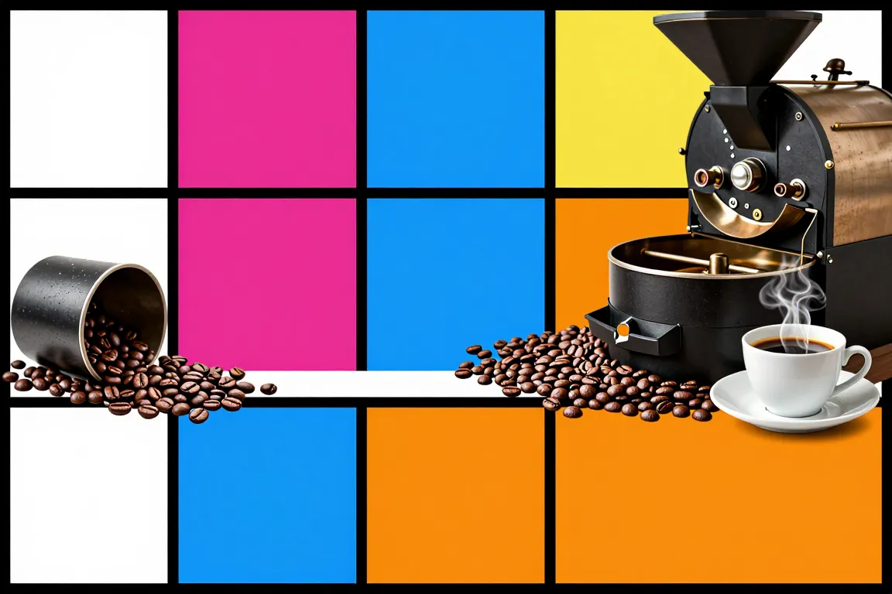

internet · 2003–2010 · also: Social profile page, Custom CSS profile, Top 8 profile
A user profile page that the owner restyled with pasted CSS: a wallpaper, glitter text, a music player, a Top 8 friends grid and a mirror-selfie photo. Myspace made the page a personal stage.

Core thesis
A profile is a bedroom wall: the owner decorates it, and the decoration says who they are.
Design principles
Replace the page ground with a full-bleed wallpaper: a band photo, a pattern or a gradient, fixed at the viewport.
Make boxes semi-transparent: black at 70% opacity with a 1px border in a bright accent such as #FF3399.
Place a profile photo of 170px wide at top left, a name line, a mood line and an 'online now' mark.
Show a Top 8 friends grid of 4 by 2 tiles of 75px by 75px with a name below each tile.
Add an autoplay music player bar of 24px to 40px and a comment wall of stacked photo and text rows.
Set text in 10px to 12px Verdana-like type, and set the headings in a decorative colour or glitter image.
Add a glitter or sparkle GIF as a heading and a blinking cursor trail.